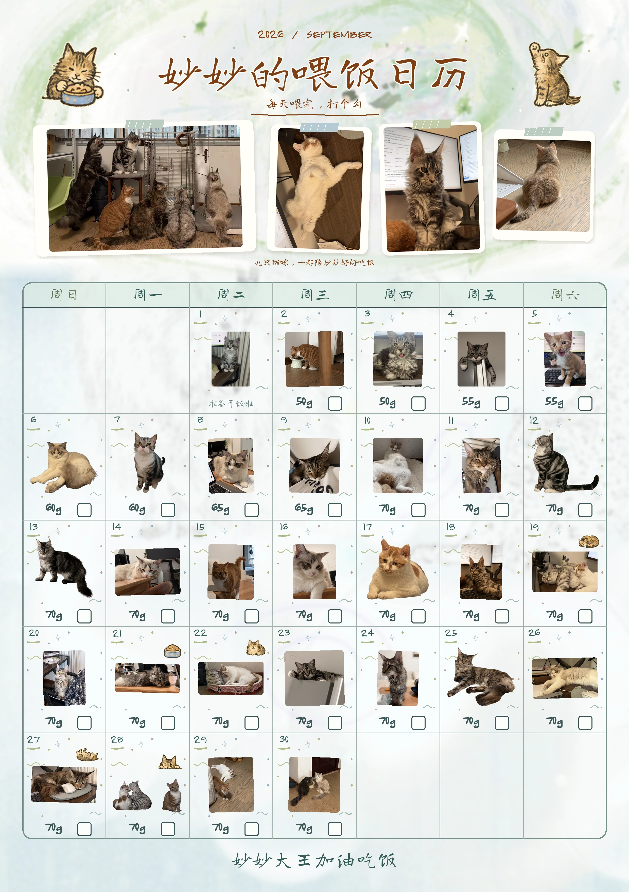

妙妙大王的九月喂完再打勾 · 自动保存
左右滑动查看整张日历，点击当天格子打勾

妙妙大王的专属小日历
连接你的私有记录，在手机和电脑上继续照顾妙妙。
使用 QuinnPeter 账号创建细粒度令牌，只选择私有仓库 miaomiao-data，授予 Contents 的 Read and write 权限。把令牌填在这里，令牌只用于向 GitHub 请求你的记录。
默认只在本次浏览器会话保存授权；选择保持连接后会保存在当前设备的浏览器中。不要在公共设备上勾选。令牌到期后可更换。
左右滑动查看整张日历，点击当天格子打勾
